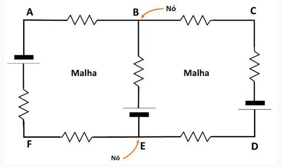
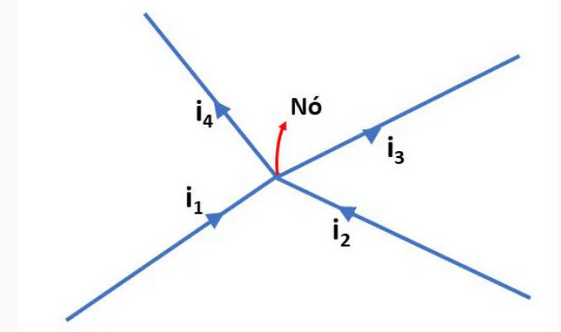

As Leis de Kirchhoff são utilizadas para encontrar as intensidades das correntes e circuitos elétricos que não podem ser reduzidos a circuitos simples
Construídas por um conjunto de regras, elas foram concebidas em 1845 pelo físico alemão Gustavo Robert Kirchhoff (1824-1887), quando ele era estudante na universidade de Konigsberg.
A 1* lei de Kirchhoff é chamada de lei de nós, que se aplica aos pontos do circuito onde a conrente elétrica se divide. Ou seja, nos pontos de conexão entre três ou mais condutores(nós)
Já a segunda lei é chamada de Lei das Malhas, sendo aplicada aos caminhos fechados de u circuito, os quais são chamados de malhas.

A lei dos nós, também chamada de Primeira lei de Kirchhoff, indica que soma das correntes que chegam em um nó é igual a soma das correntes saem.
Esta lei é consequência da convervação da carga elétrica, cuja soma algébrica das cargas existentes e u sistema fechado permanece constante.
Na figura abaixo, representamos um trecho de um circuito percorrido pelas correntes i1, i2, i3 e i4.
Indicamos ainda o ponto onde os condutores se encontram (nó):
